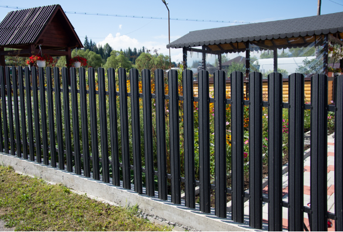

Steel versus aluminum
Steel costs more to build and more to keep finished. The quote names which metal you are buying.

Choose steel when the gate is wide, the look is ornamental iron, or the line has to take more abuse than a light aluminum picket. Choose aluminum instead when you want an open fence with almost no finish work. Steel in this climate needs a coating that stays intact. A scratch left bare will rust. We talk about that before the order, because a steel fence is a different upkeep job than the aluminum one next to it.
Metal fencing on this page means ornamental steel and iron-style work. Chain link is its own system. If the photo you have in mind is a black picket that never needs paint, that is usually aluminum.
We price the line on your lot. These are the pieces that move the number.
Steel costs more to build and more to keep finished. The quote names which metal you are buying.
A double drive gate is the expensive piece. The line on either side is the smaller share.
A coated system costs more up front than bare primed steel and fails slower if the coat stays whole.
Ornamental panels do not rack like aluminum. Steep ground means more posts and custom cuts.
Ornamental steel is priced on the style, the gate span, and the finish. It is not the same number as aluminum or chain link. A wide drive gate can cost more than the rest of a short frontage. We measure the opening before we quote it.
Yes, in steel sections that look like traditional iron. True antique iron repair is a different job. Tell us if you are matching an old section or starting a new line, because the hardware and the finish are not the same.
It will, wherever the coating is broken and water sits. East Tennessee humidity and freeze-thaw make that faster than a dry climate. We spec a finish and we tell you it has to be touched up. If you do not want that job, use aluminum.
Yes. The posts, the hinges, and the latch are sized for the leaf. A gate that is too heavy for its posts sags within a season. That is a layout decision, not something we fix with a bigger hinge later.
No. Aluminum is lighter and does not rust. Steel is stronger and needs a maintained finish. We will tell you which one the opening actually requires instead of using one word for both.
Related: Aluminum fencing · Gate installation · Commercial fencing
Call (423) 468-2697 or send the town, the approximate length, and the gate count.